Enterprise AI Knowledge & Action Hub · Local role demonstrations
Different roles. Explicit access boundaries.
Three demo accounts demonstrate protected employee queries, a salary-change proposal and rejection, and knowledge-upload permissions. Separate execution-inspector captures show how the agent obtained its answers.
These role demonstrations were captured locally. The hosted public demo keeps demo login disabled. The knowledge-management test used a temporary additional role on hr_writer_demo; that permission was subsequently removed.
Three accounts and one temporary role grant
| Identity | Assigned roles | Evidence shown |
|---|---|---|
reader_demo | knowledge_reader | Employee query denied; knowledge upload denied. |
hr_reader_demo | knowledge_reader, hr_reader, employee_data_reader | Employee query and salary comparison answered; upload denied. |
hr_writer_demo | HR-reader roles plus employee_data_writer | Salary proposal created, then rejected; upload denied with its normal roles. |
| Temporary local test | hr_writer_demo plus knowledge_manager | Document ingestion and duplicate detection. The additional permission was removed after testing. |
View the local sign-in form
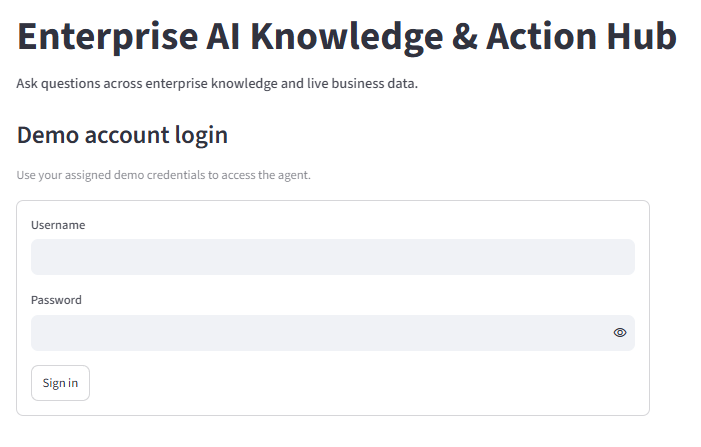
1. Same question, different authorization
Who is the highest-paid employee?
The reader receives an authorization denial. The HR reader receives an employee-data answer. The displayed values are the results captured during this local run.
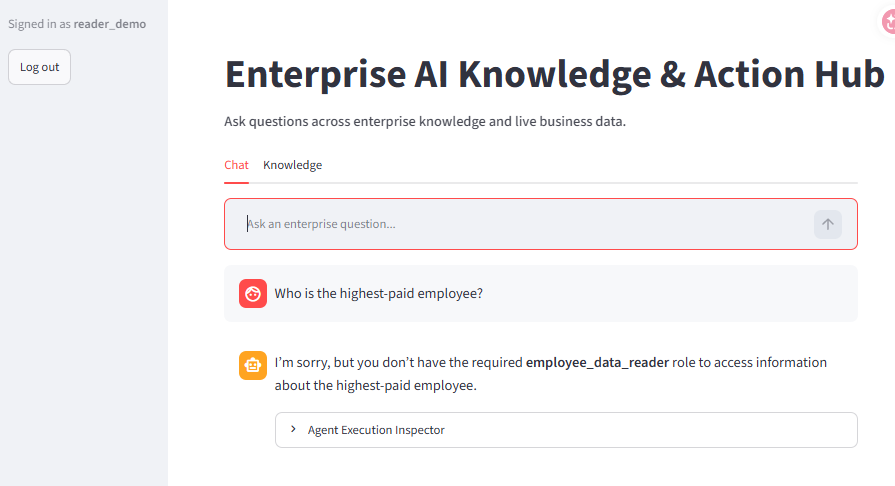
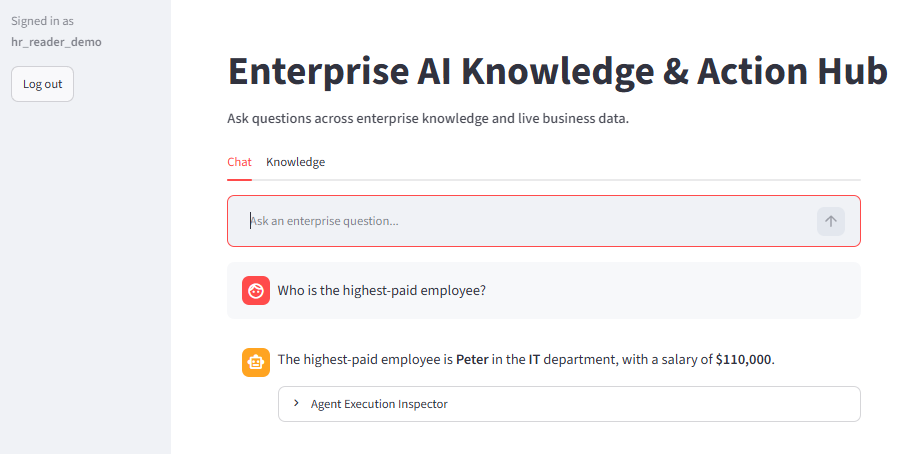
2. A proposed action requires a decision
Create a salary-change proposal for him, setting the new annual salary to 115000.
After identifying Peter in the preceding conversation, the writer creates proposal #2 for $115,000. The proposal remains PENDING and displays Approve and Reject controls. This demonstration follows the rejection path; it does not demonstrate an executed salary change.
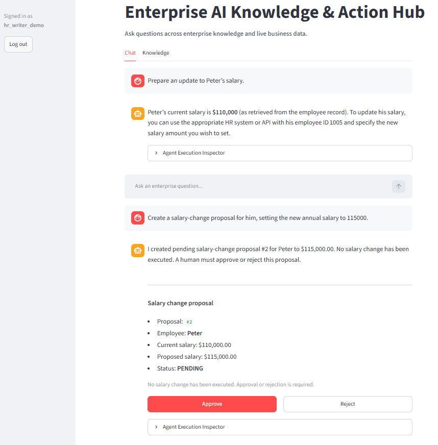
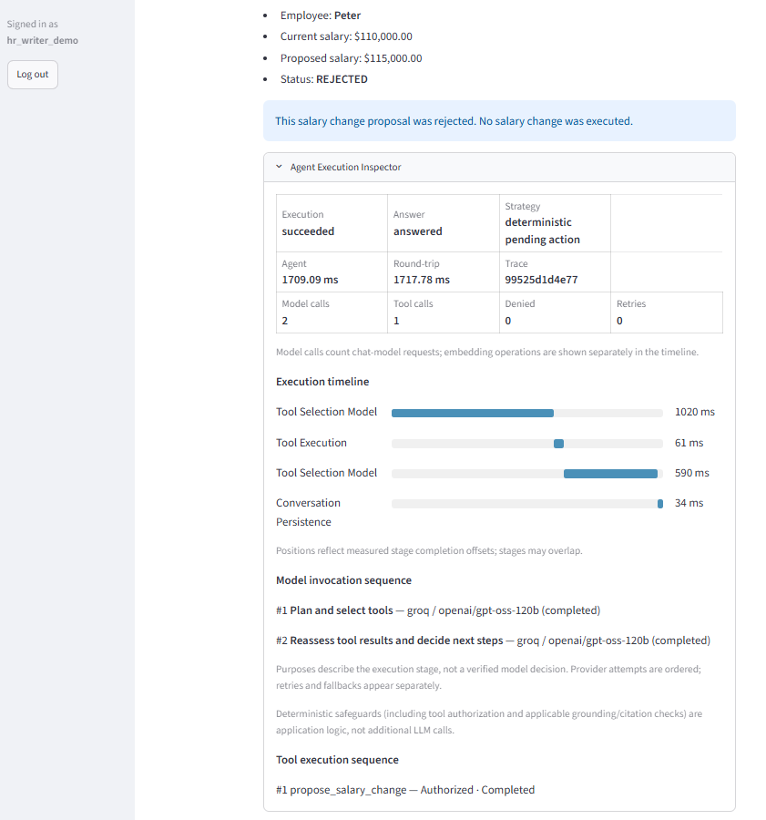
Inspect the proposal execution
The inspector records one completed propose_salary_change tool call. Its execution metrics describe proposal creation, not approval or salary-update execution.
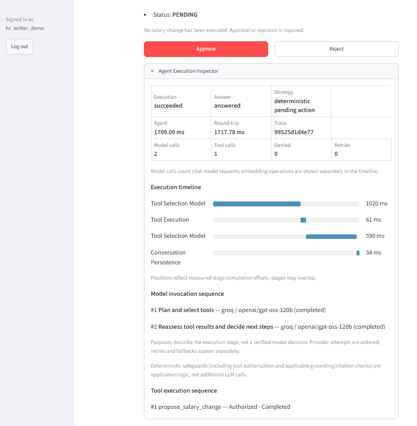
3. A multi-step employee comparison
What is Peter’s salary compared with the average salary in his department?
The HR-reader response compares $110,000 with an IT average of approximately $95,667, reporting a difference of about $14,333. The inspector shows employee lookup followed by department-average lookup and final synthesis.
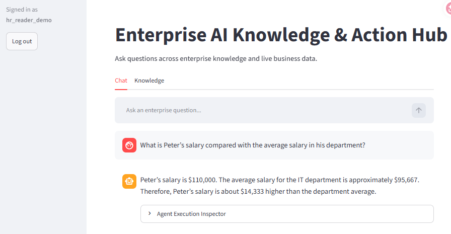
View the execution timeline and tool sequence
This captured run reports four model calls, two tool calls and no retries. These are measurements from this run, not a performance guarantee. Inspector access is a diagnostic feature shown under the HR-reader account, not a fourth demo account.
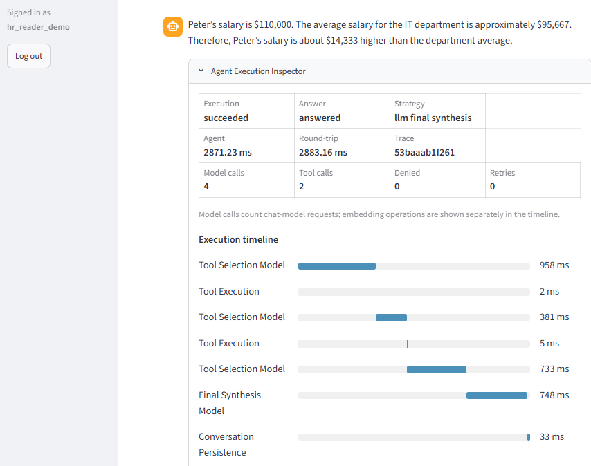
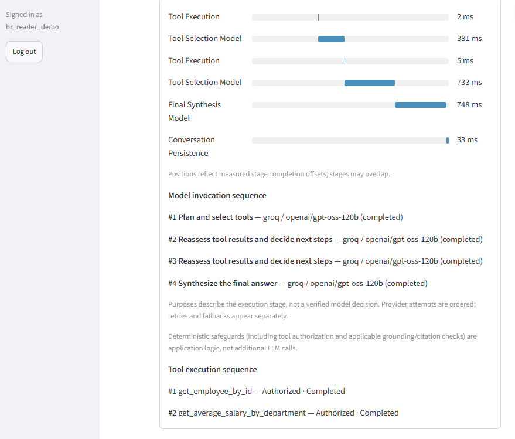
4. Knowledge administration is a separate permission
All three normal accounts are denied document ingestion. Employee-data write permission does not include knowledge-management permission.
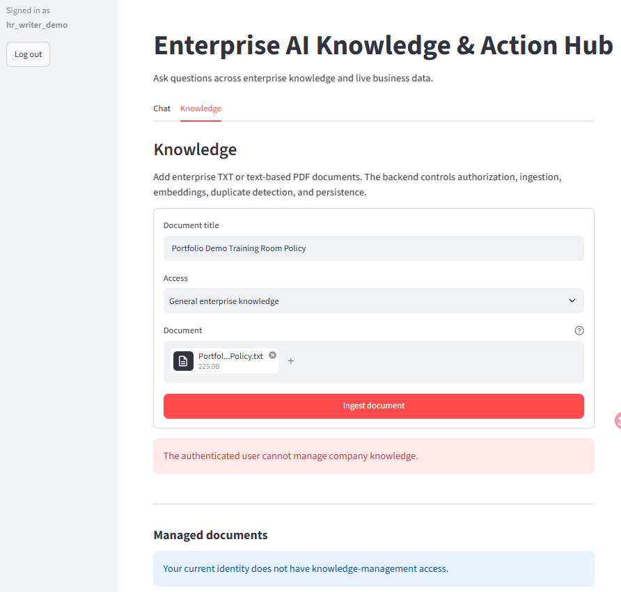
View upload denials for the reader and HR reader
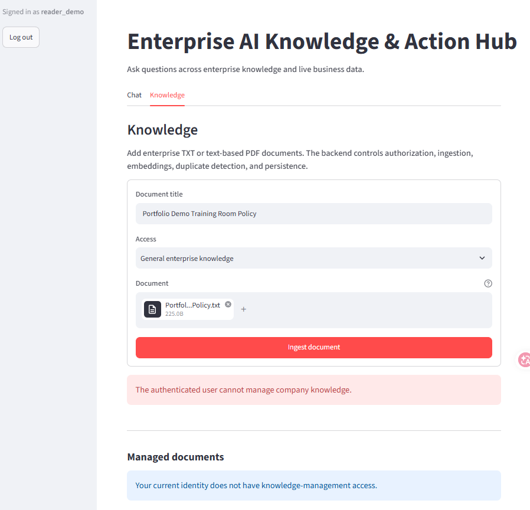
Temporary grant: successful ingestion
For the local upload test, knowledge_manager was explicitly added to hr_writer_demo. The TXT file was ingested successfully as three chunks with knowledge_reader access. The additional role was removed after testing.
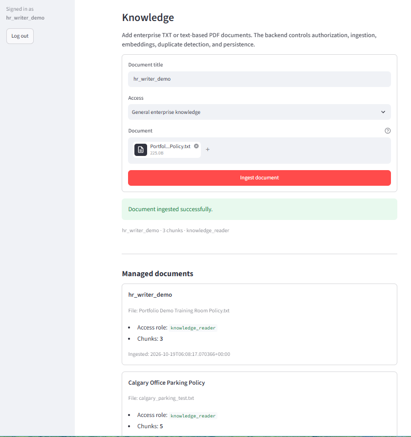
Duplicate-content detection
Uploading the same content again returns “This document content has already been ingested.”
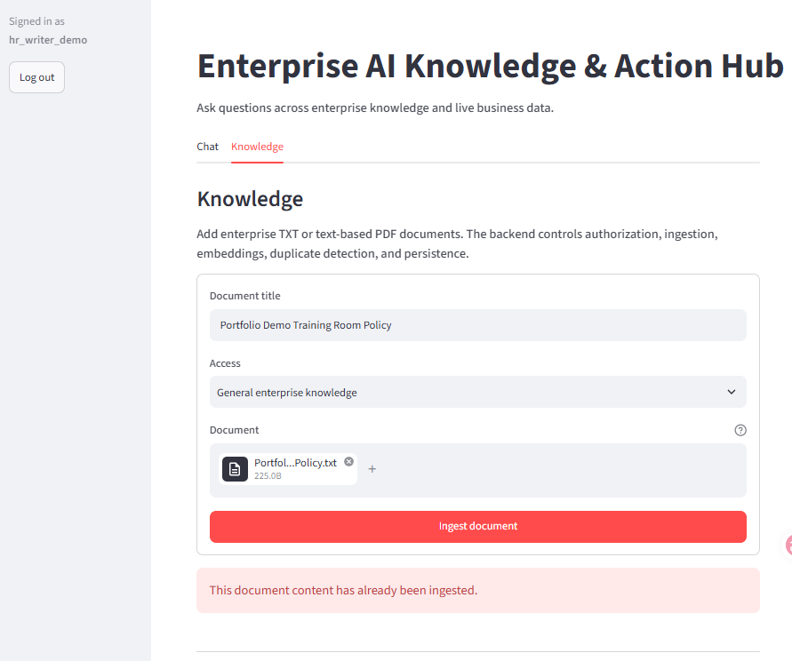
Uploaded knowledge used in a cited answer
The chat returns a 90-minute booking limit and one-business-day advance notice from the uploaded training-room document.
In this capture, the document title was entered as hr_writer_demo, although the file contains the Portfolio Demo Training Room Policy. Citations therefore display hr_writer_demo. That label is the stored document title, not the author or the querying user's role.
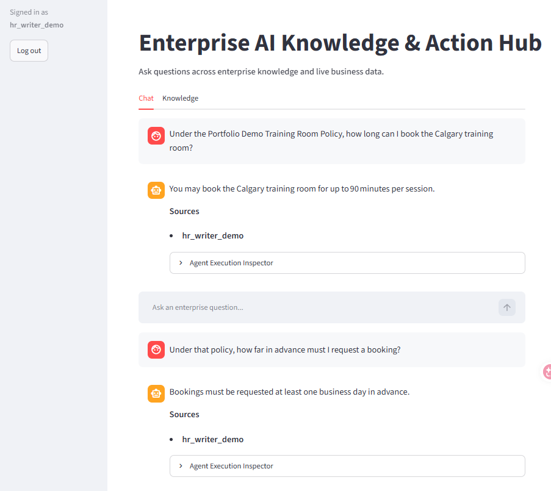